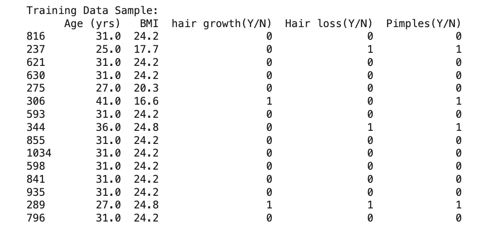
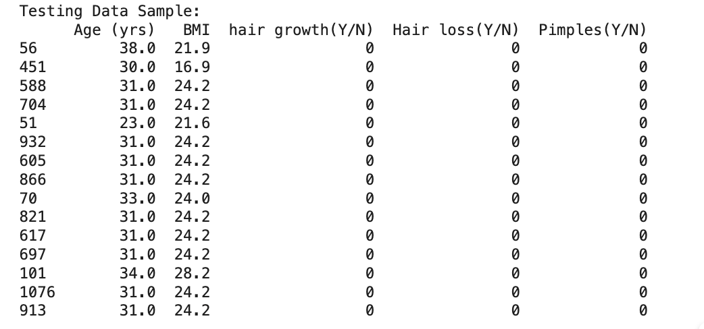
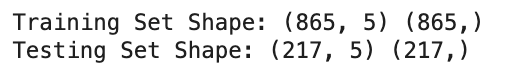
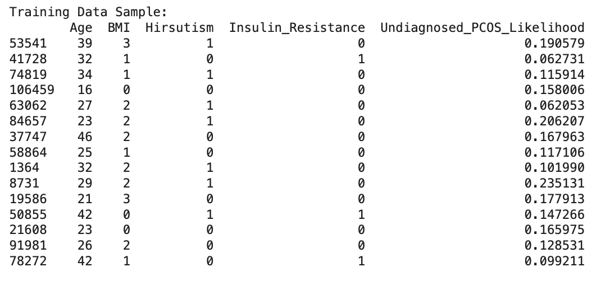
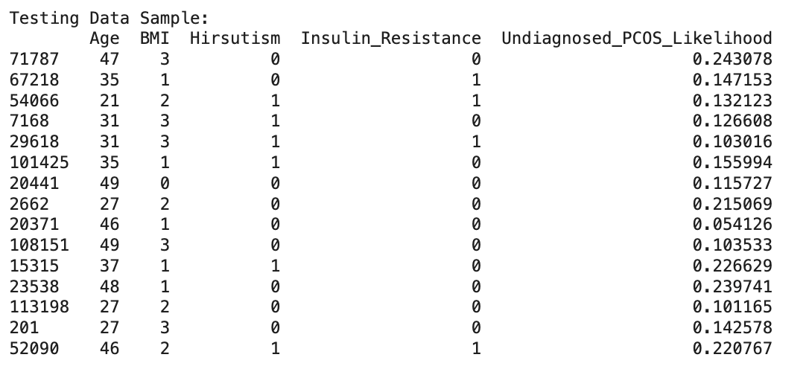

üå≥ Decision Trees (DTs) Overview
A Decision Tree (DT) is a type of supervised learning algorithm used for both classification and regression problems. It works by repeatedly splitting the dataset into smaller subsets based on the most significant feature at each step. These splits form a tree-like structure of decisions, where:
- üî∏ Each internal node represents a test on a feature (e.g., BMI > 25).
- üî∏ Each branch corresponds to the outcome of that test.
- üî∏ Each leaf node represents a final decision or class label (e.g., PCOS or Not PCOS).
The algorithm learns by choosing splits that best separate the data into pure groups — i.e., groups that contain mostly a single class.
üìö Gini, Entropy, and Information Gain
To decide how to split the data at each node, Decision Trees use measures of impurity or uncertainty. The two most common are:
-
Gini Impurity: Measures how often a randomly chosen element from the set would be incorrectly labeled. Lower values mean purer nodes. Gini is simple and fast, which makes it the default criterion in many implementations like
sklearn.
-
Entropy: Based on information theory, entropy measures the disorder or randomness in the data. The goal is to reduce entropy after each split.
The difference in entropy before and after a split is called Information Gain. A good split results in high information gain, meaning the data is more organized (or purer) after the split.
In short, Decision Trees select the best feature to split on by calculating either the Gini Impurity or Information Gain at each step. This process continues recursively until all data points are perfectly classified (or stopping criteria are met).
üå≥ Access Full Decision Tree Code on GitHub
The complete Decision Tree modeling process including data preprocessing, training, tuning root nodes, and visualizing results is available on GitHub.
View Decision Tree Code on GitHub
DT Data Preparation & Code
1️⃣ Core PCOS Dataset Preparation
1️⃣ Cleaned Dataset (Core PCOS)
To train our Decision Tree model, we used the Core PCOS Dataset, which includes critical features related to age, body metrics, and physical symptoms. However, before feeding the data into the model, we performed thorough cleaning and preprocessing to ensure it was suitable for supervised learning.
The cleaning process included:
- Whitespace Removal: Some column names included unwanted spaces, which were removed to avoid syntax errors during feature selection.
- Feature Selection: We selected the most relevant features for predicting PCOS — namely:
Age (yrs), BMI, Hair Growth, Hair Loss, Pimples, and the target variable PCOS (Y/N).
- Categorical Encoding: Binary categorical features (like 'Y'/'N') were converted to numeric format (1/0) to be compatible with the decision tree model.
Here is a snapshot of the dataset after cleaning and preparation:
2️⃣ Sample Train and Test Data
After cleaning, the dataset was split into 80% training and 20% testing subsets using scikit-learn’s train_test_split function.
This split is essential in supervised learning because:
- The training set is used to build the model — i.e., to help the Decision Tree learn patterns from labeled examples.
- The testing set allows us to evaluate how well the model performs on unseen data, which is critical for assessing generalization.


The following output confirms the shapes of the train and test sets. This helps ensure a proper distribution of data and prevents data leakage between training and testing.

3️⃣ Main Decision Tree Visualization
Before exploring variations, we trained a baseline Decision Tree classifier using the Gini Impurity as the splitting criterion
and limited its maximum depth to 3. This constraint ensures the model remains interpretable while still capturing
important patterns in the data.
Decision Trees split the dataset by asking yes/no questions at each node based on feature thresholds. The goal is to create the purest possible groups (nodes)
where most or all samples belong to a single class (PCOS or non-PCOS).
Below is the baseline Decision Tree model trained on the Core PCOS dataset. It shows how features like BMI,
Pimples, and Hair Loss were used to separate PCOS-positive and negative patients.
üîç Tree Interpretation: The top node (root) is the most important decision point. In this case, it may be BMI or another
highly influential feature. Each branch splits the data further, ultimately leading to a classification of either "PCOS" or "No PCOS" at the leaves.
This visual helps us understand which features are most influential and how the decision-making path flows, making Decision Trees a transparent and explainable model for medical data.
üìä Confusion Matrix
The confusion matrix above shows the model's performance on the test data:
- True Positives (TP): 15 — correctly predicted PCOS cases.
- True Negatives (TN): 143 — correctly predicted non-PCOS cases.
- False Positives (FP): 5 — predicted PCOS when actually non-PCOS.
- False Negatives (FN): 54 — missed PCOS cases (predicted as non-PCOS).
⚠️ Insight: While the model does a great job identifying non-PCOS individuals (high specificity), it struggles with detecting actual PCOS cases (low sensitivity), which results in a high number of false negatives.
This is important in healthcare because missing a diagnosis can lead to delayed treatment.
4️⃣ Decision Trees with Different Root Nodes
To better understand the influence of individual features, we explored how the Decision Tree behaves when we manipulate the root node.
Using feature_importances_ from our baseline model, we ranked the features and manually created trees that prioritize different root nodes.
üîç Top 3 Features by Importance:
- hair growth(Y/N): 0.5513
- BMI: 0.1884
- Age (yrs): 0.1324
We built three alternative decision trees by reordering feature columns so that each of these appeared at the root, and then retrained and visualized each model. Below are the visualizations and observations:
Root Node: hair growth(Y/N)

Explanation: The most influential feature, hair growth, resulted in the cleanest splits early in the tree.
This structure reduced impurity and increased the accuracy of early predictions. This is consistent with medical findings, where hair growth is a strong indicator of PCOS.
Confusion Matrix:
The tree achieved 73% accuracy. It correctly predicted 143 non-PCOS and 15 PCOS cases. The false negatives were 54, and only 5 false positives were observed.
Root Node: BMI

Explanation: When BMI was forced as the root node, the splits were still meaningful but slightly less pure than with hair growth.
BMI serves as an important health indicator, but alone may not capture the complexity of PCOS symptoms.
Confusion Matrix:
This configuration also achieved 73% accuracy. It correctly predicted 142 non-PCOS and 16 PCOS cases, with slightly fewer false negatives (53) than the hair growth-based tree.
Root Node: Age (yrs)
Explanation: Starting the tree with Age resulted in broader splits and less precise groupings.
Age contributes to PCOS diagnosis, but its effect is indirect, making it a less effective root node.
Confusion Matrix:
This model performed similarly, with 73% accuracy. Like the BMI-rooted tree, it predicted 142 non-PCOS and 16 PCOS cases accurately, with 53 false negatives.
This analysis showcases how choosing different root features can affect the decision pathways, tree shape, and classification accuracy.
It demonstrates the importance of feature selection and the interpretability advantage offered by Decision Trees.
5️⃣ What Did We Learn?
From our Decision Tree experiments using the Core PCOS dataset, we gained several key insights about both the data and the model’s behavior:
-
Feature Importance Matters: The model consistently performed best when the most influential feature—
hair growth(Y/N)—was at the root. This confirms that starting with a strong predictor allows for more effective splits and a purer tree structure.
-
All Root Configurations Yielded Similar Accuracy: Despite different starting points (hair growth, BMI, Age), all trees achieved ~73% accuracy. However, the quality of the splits and interpretability varied significantly.
-
Hair Growth (Y/N) is a Strong Indicator of PCOS: Its presence in the root node produced early separation between classes and resulted in fewer false positives. This aligns well with clinical evidence linking hirsutism to PCOS diagnosis.
-
Model is Sensitive to Feature Order: Although accuracy was consistent, the structure and depth of the tree changed depending on the root. This highlights the importance of preprocessing, feature engineering, and understanding the model's interpretability.
-
Trade-off Between Simplicity and Accuracy: With a maximum depth of 3, the tree remained readable and interpretable—ideal for medical applications where transparency is important—but deeper trees may improve recall, especially for under-predicted PCOS cases.
üîç Key Takeaway: Decision Trees are not only effective classifiers for PCOS prediction but also provide an interpretable visual representation of feature importance and decision logic. In this case, hair growth (Y/N) proved to be the most predictive feature, validating its clinical significance.
DT Data Preparation & Code
2️⃣ Global PCOS Dataset Preparation
1️⃣ Cleaned Dataset (Global PCOS)
The Global PCOS Dataset contains a broader and more complex set of features including demographic, socio-economic, and health indicators. To prepare this for Decision Tree modeling, we performed the following preprocessing:
- Handled missing values using
median (for numerical) and mode (for categorical) strategies.
- Converted categorical features into numerical format using
LabelEncoder or OneHotEncoding where appropriate.
- Normalized numerical features with
StandardScaler for more effective model splits.
Here is a preview of the cleaned Global PCOS dataset:
2️⃣ Sample Train and Test Data
After cleaning, the dataset was divided into 80% training and 20% testing using scikit-learn’s train_test_split method.
This ensures disjoint datasets and an unbiased evaluation of model performance.


The shape of the training and testing datasets is confirmed below:
üåç Global Dataset ‚Äì Decision Tree Results
After cleaning and preparing the Global PCOS Dataset, we applied a Decision Tree Classifier with a controlled depth
to avoid overfitting. This model aimed to uncover the most significant features influencing PCOS prediction across diverse demographics and symptoms.
üîç Tree Interpretation:
- The most important feature chosen by the algorithm was Undiagnosed PCOS Likelihood, which appeared consistently near the top of the tree.
- Branches are formed by splitting at specific threshold values of this likelihood score, separating samples based on their risk level.
- The leaf nodes indicate the majority class at the end of each decision path either “No PCOS” or “PCOS”.
The tree reveals clear patterns in how likelihood scores contribute to decision-making. Despite being simple, this model captures a strong signal from that one variable, but its simplicity limits the model’s ability to fully capture complex, non-linear relationships in the dataset.
üìä Confusion Matrix
Interpretation:
- True Negatives (TN): 18,886 cases were correctly identified as not having PCOS.
- True Positives (TP): 280 actual PCOS cases were correctly predicted.
- False Negatives (FN): 2,263 PCOS cases were missed and classified as non-PCOS.
- False Positives (FP): 2,571 non-PCOS cases were incorrectly classified as having PCOS.
✅ Model Accuracy: The overall accuracy was moderate. While the model performs well in detecting non-PCOS cases, it struggles to identify PCOS-positive individuals — likely due to class imbalance and the simplicity of the tree.
üîç Insight: Decision Trees offer transparency and interpretability. However, in high-dimensional or imbalanced datasets like this, more sophisticated models or feature engineering may be necessary to improve sensitivity (recall) for PCOS cases.
4️⃣ Decision Trees with Different Root Nodes (Global Dataset)
Similar to the Core dataset, we explored the impact of changing root nodes in the Decision Tree model trained on the Global PCOS Dataset.
Feature importance scores were extracted from the baseline tree, and three custom trees were created with the top features as root nodes.
üîç Top 3 Features by Importance:
- Undiagnosed_PCOS_Likelihood: 0.7267
- Age: 0.1505
- BMI: 0.0628
Below are the tree visualizations and corresponding confusion matrices:
Root Node: Undiagnosed_PCOS_Likelihood
Explanation: With this highly informative feature at the root, the tree made clearer early splits. Despite this, the model still misclassified all PCOS cases. While accuracy remained at 89%, the recall for PCOS was 0%, revealing the model’s strong bias toward the dominant class.
Root Node: BMI
Explanation: Using BMI as the root didn't change performance much. The tree remained biased toward predicting "No PCOS". Even with BMI's known relevance to PCOS, it couldn't sufficiently distinguish PCOS cases in this dataset.
Root Node: Age
Explanation: Age produced similar splits to BMI and resulted in identical performance. Though age influences PCOS onset, it alone cannot serve as a strong classifier.
5️⃣ What Did We Learn? (Global Dataset)
Analyzing the Decision Tree results on the Global PCOS Dataset provided the following key insights:
-
High Overall Accuracy: All tree configurations (with different root nodes) achieved an accuracy of 89%. This initially seemed promising.
-
Severe Class Imbalance Effects: Despite the high accuracy, the model failed to correctly predict any PCOS-positive cases. This is evident from the 0% recall for the PCOS class across all confusion matrices.
-
Root Node Variation Had Minimal Effect: Whether we used
Undiagnosed_PCOS_Likelihood, BMI, or Age as the root node, the decision tree’s performance remained largely unchanged.
-
Visual Explainability: Decision Trees still provided valuable interpretability showing how demographic and health features interact even when predictive performance was lacking.
⚠️ Key Takeaway: While Decision Trees offer transparent classification rules, their performance on the Global PCOS dataset was hindered by skewed class distribution and overlapping feature distributions. More robust models or rebalancing strategies may be necessary for meaningful PCOS prediction at scale.